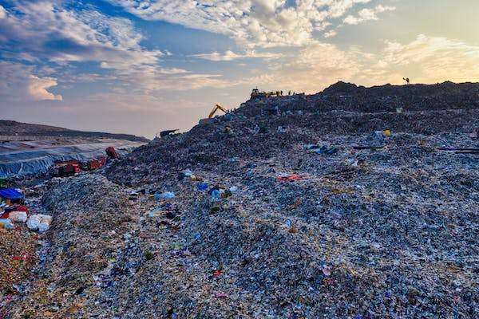
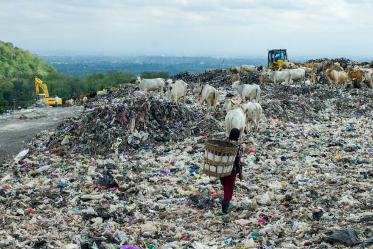
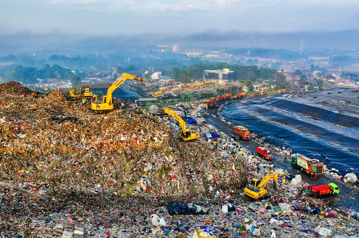
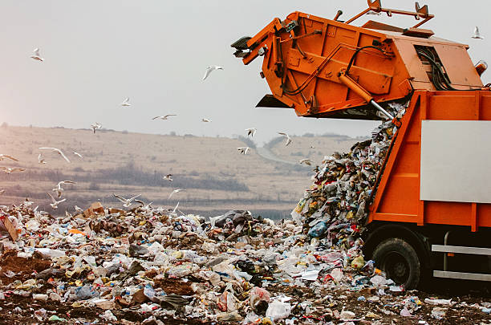
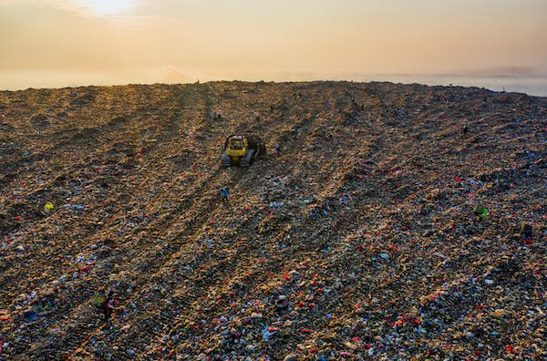
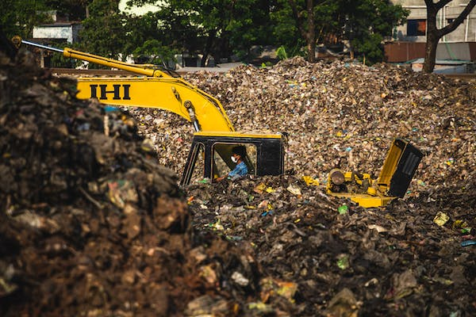

TPA Bantar Gebang
Ciketing Udik, Kec. Bantar Gebang, Kota Bekasi, Jawa Barat.
TPA Cipeucang
Serpong, Kec. Serpong, Kota Tangerang Selatan, Banten.
TPA Jatibarang
Kedungpane, Kec. Mijen, Kota Semarang, Jawa Tengah.
TPA Piyungan
Sitimulyo, Kec. Piyungan, Kabupaten Bantul, Yogyakarta.
TPA Sukawinatan
Sukajaya, Kec. Sukarami, Kota Palembang, Sumatera Selatan.
TPA Benowo
Romokalisari, Kec. Benowo, Surabaya, Jawa Timur.